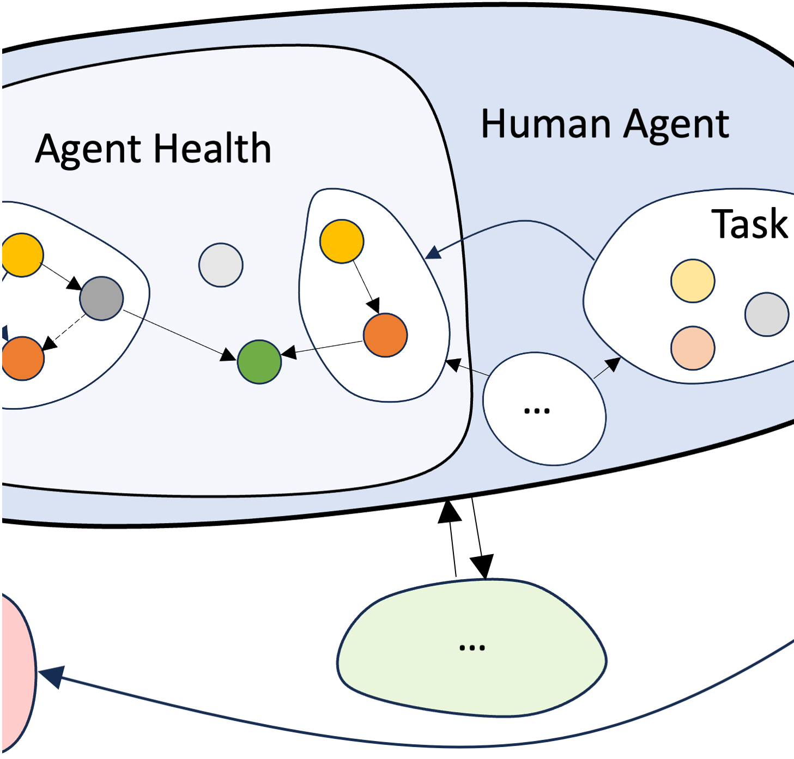
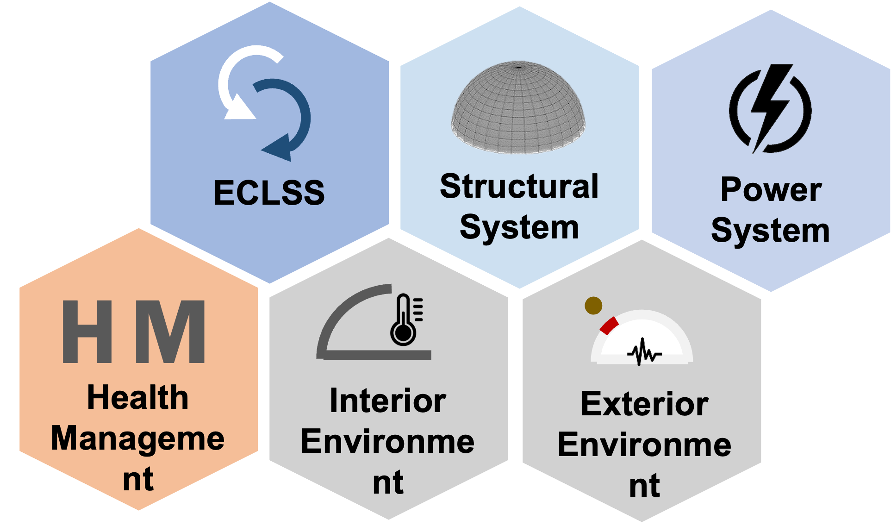
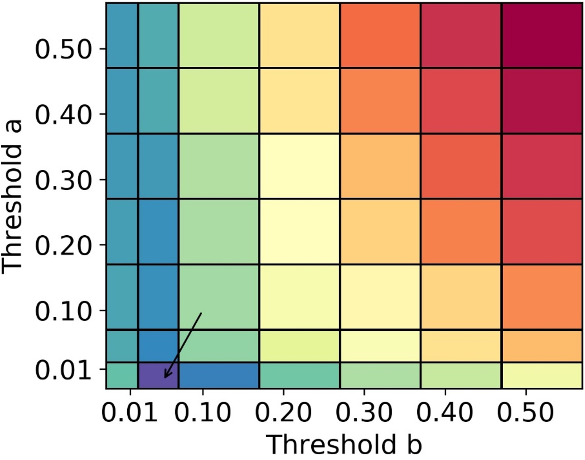

|
Xiaoyu Liu I am an Assistant Professor in the Department of Mechanical and Aerospace Engineering at the University of South Florida. Prior to this, I was a postdoctoral researcher at the NASA-funded RETH Institute, where I focused on human and robotic agent modeling and analysis in space missions. I hold a Ph.D. and M.S. in Mechanical Engineering from Purdue University, where I had the privilege of being advised by Prof. Shirley J. Dyke, and a B.S. in Mechanical Engineering from Xi’an Jiaotong University. |

|
About ResearchMy main research interests focus on applying machine learning and mathematical methods to address challenges in human–robot teaming for space missions. I am currently recruiting Ph.D. and M.S. students starting in Spring/Fall 2026. If you are interested in machine learning/multi-agent teaming/space mission planning, send me an email at xiaoyuliu@usf.edu! |
|

|
Computational framework for assessing space mission outcomes with humans and robots
This project presents a fast, customizable computational framework to compare human crews and robotic agents for space missions. By modeling agents as system-of-systems and applying stochstic Markovian process modeling with Monte Carlo simulation, the framework captures agents' work schedules, resource consumption, and task-performance capability, then maps a benefit–cost trade space (Science Research Hours vs. Modified-ESM) to guide mission-ready choices. Liu, X., Behjat, A., Dyke, S. J., Whitaker, D., Ramirez, J., & Bilionis, I. (2025). Computational Framework for Assessing Mission Outcomes with Humans and Robots. AIAA Journal, 63(4), 1596-1614. Liu, X., Behjat, A., Dyke, S., Whitaker, D., Ramirez, J., & Bilionis, I. (2023, July). Roles of human and robotic agents toward operating a smart space habitat. 2023 International Conference on Environmental Systems. |
|

|
Computational framework for making early design decisions in deep space habitats
A modular Control-oriented Dynamic Computational Model is developed for rapid simulation of system-of-systems (e.g., deep-space habitats) with disturbances, damage/degradation, repair/recovery, and a simple health-management decision layer. The Python-based framework outputs decision-ready cost–value trade spaces for early design choices and is demonstrated on structural-maintenance and space-habitat power-configuration case studies. Behjat, A., Liu, X., Forero, O., Ibrahimov, R., Dyke, S., Bilionis, I., ... & Whitaker, D. (2024). A computational framework for making early design decisions in deep space habitats. Advances in Engineering Software, 195, 103690. |

|
Automated image localization to support rapid building reconnaissance in a large‐scale area
A fully automated indoor image-localization is developed for post-event building reconnaissance. The framework aligns the reconstructed path and point cloud to structural drawings to yield reliable photo locations across varied layouts, validated on multiple real buildings with only inexpensive wearable cameras. Liu, X., Dyke, S. J., Lenjani, A., Bilionis, I., Zhang, X., & Choi, J. (2023). Automated image localization to support rapid building reconnaissance in a large‐scale area. Computer‐Aided Civil and Infrastructure Engineering, 38(1), 3-25. Liu, X., Dyke, S. J., Yeum, C. M., Bilionis, I., Lenjani, A., & Choi, J. (2020). Automated indoor image localization to support a post-event building assessment. Sensors, 20(6), 1610. |

|
Accelerated naive Bayesian probability fusion algorithm
This project provides an accelerated naive Bayesian probability fusion algorithm that enables fast computation even when dealing with very large probability lists, where the exact method becomes prohibitively slow. It is part of the work as “Information fusion to automatically classify post-event building damage state”. Liu, X., Iturburu, L., Dyke, S. J., Lenjani, A., Ramirez, J., & Zhang, X. (2022). Information fusion to automatically classify post-event building damage state. Engineering Structures, 253, 113765. |
|

|
Information fusion to automatically classify post-event building damage state
This research developed an automated information-fusion framework classifies a building’s overall post-event damage state from sets of field photos by combining image-level classification results. Validated on 29,543 field images from 720 buildings, this framework delivers robust, building-level damage categories to speed up reconnaissance and downstream decision-making.  Liu, X., Iturburu, L., Dyke, S. J., Lenjani, A., Ramirez, J., & Zhang, X. (2022). Information fusion to automatically classify post-event building damage state. Engineering Structures, 253, 113765. |
|
Source code from Jon Barron. |